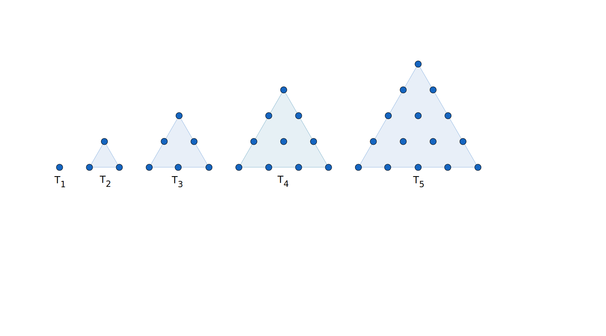
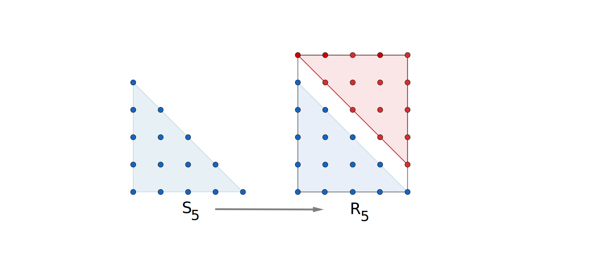
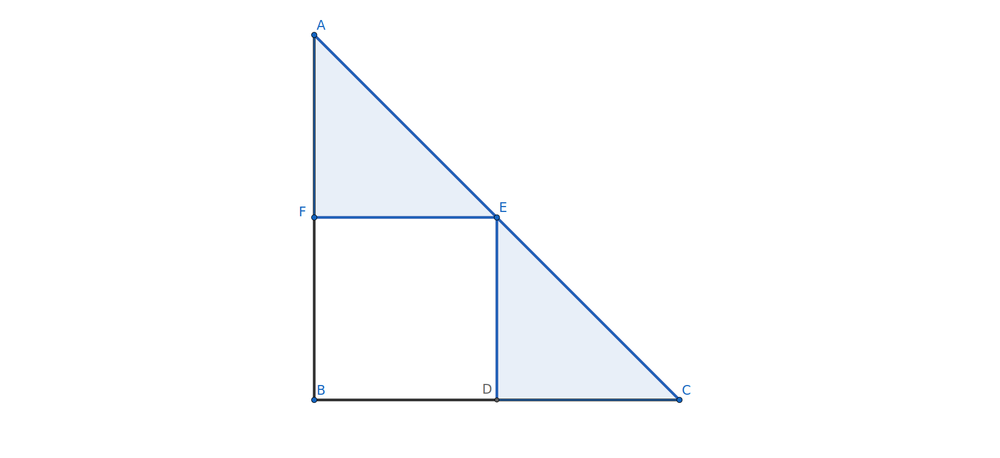

We begin this section by creating a pattern and using it to develop a conjecture.
Exploration1.3.1.
(a)
Compute the following sums:
\(\displaystyle 1+3\)
\(\displaystyle 1+3+5\)
\(\displaystyle 1+3+5+7\)
\(\displaystyle 1+3+5+7+9\)
(b)
Without actually adding the values, make a prediction for the following sums:
\(\displaystyle 1+3+5+\cdots +11\)
\(\displaystyle 1+3+5+\cdots + 41\)
\(\displaystyle 1+3+5+\cdots +201\)
Hint.
The expression \(1+3+5+\cdots + 11\) is another way of writing \(1+3+5+7+9+11\text{.}\) We write enough addends to establish a pattern and then the \(\cdots \) tells the reader that the pattern continues. The \(+11\) at the end indicates that the sum will end when the pattern reaches \(11\text{.}\)
(c)
Based on your work above, give a simple formula that can be used to calculate \(1+3+5+\cdots+(2n+1)\) for any positive integer \(n\text{.}\)
Hint.
In the previous problem, \(n=100\) since \(201=2(100)+1\text{.}\)
(d)
Explain how you came up with your formula and why you believe it holds for all \(n\geq 2\text{.}\) If you were not able to come up with a formula, describe what you have discovered about these sums.
Subsection1.3.2Conjectures and Explanations in Mathematics
Have you ever wondered how mathematics came into existence? A simple answer is that people explored mathematical objects, like numbers or shapes, and noticed patterns and consistencies. They then sought to convince themselves and others that these patterns were not just coincidences but universal properties of the numberic or geometric structure. For example, they observed and then proved that whenever a triangle had two sides of equal length the angles opposite those sides would be congruent.
How do we convince others? In mathematics, we start with basic assumptions like the principles and definitions in this text and then use logic to demonstrate that our conjecture must follow. We also accept the algebraic properties of the real number system along with properties of equality and inequality, allowing us to simplify algebraic expressions and solve linear equalities and inequalities using techniques learned in previous courses. Once we prove a claim, it is no longer a conjecture and is now considered to be a theorem. We can then add the theorem to our toolbox and use it to demonstrate new claims.
Since this textbook is written for students majoring in fields other than mathematics, we will not spend time developing proof-writing techniques. Even so, everyone can benefit from learning to write clear and thorough explanations and demonstrations. Future teachers should develop the ability to explain mathematics carefully and accurately, using words, pictures, and multiple approaches that their students can understand. For a future lawyer or business professional, the practice of writing explanatory papers in mathematics will enhance their ability to present and support arguments for their cases and proposals. As you write explanations, choose an audience that makes sense for you--a student, a friend, a colleague, a jury --and use language appropriate for that audience.
How do we write mathematical explanations and establish new truths? We usually let our readers know what we claim and plan to prove. In geometry, we often accompany our explanations with a sketch on which we have labeled with the names of points and/or variables for lengths so that our reader can follow our argument visually. We do not assign numerical values to lengths as we do not want to limit our claim to one example.
In Exploration 1.3.1, we discovered a formula for the sum of the first \(n\) odd numbers. It appears to equal \(n^2\text{,}\) but why? Simply observing the pattern via a few examples, does not convince us that this will also be the case for \(n=1000\text{.}\) Something strange might happen between 5 and 1000. Instead, consider the following “proof by pictures”:
Exploration1.3.2.
(a)
The first four steps of a pattern are provided.

Sketch what the fifth and sixth step of the pattern should look like.
(b)
One way of computing the area of the figure in each step is to measure the height and width and multiply. For step one we get \(1\times 1=1\text{,}\) and for step two we get \(2\times 2=4\text{.}\) Use this technique to determine the area of
the third figure.
the fourth figure.
the fifth figure.
the sixth figure.
(c)
The area of the third figure can also be found by computing the area of each of the four rectangles that make up the figure, namely \(2^2+2+2+1\text{.}\) Show and compute the sum of the smaller rectangles
the fourth figure.
the fifth figure.
the sixth figure.
(d)
The image to the right shows an \(n\times n\)-square with two \(n\times 1\) rectangles aligned with the lower and right sides, respectively. The lower right corner has been filled with a 1-unit square.
Figure1.3.1.An arbitrary step in the pattern.
Write the following as unsimplified algebraic expressions with the variable \(n\text{:}\)
The total area found by multiplying the height and length of the figure.
The total area found by adding the areas of the four rectangles.
(e)
What algebraic equation or formula does this work suggest? Give an explanation of why it must hold using words, pictures, geometry, and/or algebra.
Subsection1.3.3A Sample Explanatory Letter
The following letter demonstrates how we might write a thorough, yet informal, explanatory letter. Note the use of variables for a general argument and labeled sketches to help the reader follow our argument.
Dear Aunt Josephine,
I have been thinking about you a lot lately and how much I appreciated your help when I was learning algebra. You may remember how much I struggled with understanding why \((x+1)^2\) equals \(x^2+2x+1\) instead of \(x^2+1\) in that course. In my current geometry course, I learned a geometric argument for that equation that makes more sense to me and I thought you might like it too.
In the picture below, you can see a square with side \(n+1\) broken up into four rectangles. (Here, I am using \(n\) in place of \(x\text{.}\)) The area of this square is \((n+1)^2\) of course. Notice that \(n^2+1\) is the sum of the areas of the \(n\times n\) square (top left) and the small \(1\times 1\) square (lower right). These do not fill the entire square so \((n+1)^2\) must be greater than \(n^2+1\text{.}\) The two missing pieces are rectangles with area \(n\times 1=n\text{.}\) Adding all four pieces, we see \((n+1)^2=n^2+2n+1\text{.}\)
Figure1.3.2.Visualizing \((n+1)^2=n^2+2n+1\)
Now that I have seen this geometrically I remember the formula much better!
I hope you and Uncle Tom are doing well. I look forward to visiting you soon.
Sid
Notice how the author Sid introduces the reader to what will be demonstrated, uses a picture to help the reader visualize the explanation, and then explains in words how the picture justifies the argument. In this example, Sid has to deal with the fact that we typically use the variable \(x\) in algebra to represent any real number but the variable \(n\text{,}\) representing whole numbers appeared in the sketch. Aunt Josephine is alerted to the fact that \(n\) would be used in place of \(x\) and Sid consistently uses \(n\) in the logical argument. The author could have drawn a new sketch and relabeled it with \(x\) in place of \(n\text{,}\) but chose not to do so. Since the author is using the sketch from the activity, a citation reference should be included. In fact, if a tool like Polypad or GeoGebra is used to create a sketch, the technology should be credited. Also, note how Aunt Josephine did not have to see the questions in the activity to understand Sid’s explanation.
Checkpoint1.3.3.
Did you notice the unstated use of Principle 1.1.3 in Sid’s letter? Explain the role of this principle here.
Exercises1.3.4Exercises
Skills and Recall
1.
Determine two different possibilities for the next term in the sequence \(1,2,4,\ldots\text{.}\) Give reasons for your answers.
Extending the Concepts
2.A Triangular Pattern of Dots.
Consider the pattern suggested by the triangles of dots:

Figure1.3.4.A Sequence of Triangles
List the number of dots in each of \(T_1, T_2, T_3, T_4, T_5\text{.}\) Do not add these five numbers.
Sketch \(T_6\text{.}\) How many dots does it have?
Without drawing the picture, how many dots should \(T_{10}\) have? Why?
In Figure 1.3.6, the dots in \(T_5\) have been rearranged to form an isosceles right triangle, labeled \(S_5\text{.}\) Then a second copy of this configuration has been made and rotated so that together they form a rectangle, labeled \(R_5\text{.}\)
Use this process to sketch \(R_2\text{,}\)\(R_3\text{,}\) and \(R_4\text{.}\) What should \(R_1\) look like?
What is the number of dots (blue and red together) in each row of \(R_5\text{?}\)
How many rows of dots does \(R_5\) have?
How is the product of these two numbers related to the number of dots in \(T_5\text{?}\) Explain why this result is what one might expect from the picture.
Use your sketches of \(R_2, R_3, R_4\) and the provided sketch of \(R_5\) to complete Table 1.3.5.
Letting \(n\) stand for the number of rows in our triangle \(T_n\text{,}\) give a formula for the total number of dots in \(T_n\text{.}\) The formula will use the variable \(n\text{,}\) work for all possible positive integers \(n\text{,}\) and not require the use of \(\cdots\text{.}\)
Table1.3.5.Counting Dots in Triangles and Rectangles
Index \(n\)
Number of dots per row
Number of rows of dots
Number of dots in \(R_n\)
Number of dots in \(T_n\)
1
1
2
2
1
2
2
3
6
3
3
?
?
?
?
4
?
?
?
?
5
?
?
?
?

Figure1.3.6.Rearranging the fifth triangle of dots
Writing Prompts
3.Why is \(\sqrt{8}\) equal to \(2\sqrt{2}\text{?}\)
In Figure 1.3.7, assume \(DEFB\) is a square with side length \(1\) and that \(F\) and \(D\) are the midpoints of \(\overline{AB}\) and \(\overline{BC}\text{,}\) respectively.

Figure1.3.7.Right triangle of side length 2
Write a letter to Aunt Josephine or another friend in which you describe how this picture shows that \(\sqrt{8}=2\sqrt{2}.\)
4.Writing about the Count of Dots in a Triangle.
Write a letter to a friend in the style of the letter to Aunt Josephine in which you explain why \(1+2+3+\cdots+n=\frac{n(n+1)}{2}.\) Your sketches and discoveries in Exercise 1.3.4.2 should be helpful in writing this letter.
5.Wonder in Mathematics.
After watching the TEDxSidney Talk, “Mathematics is the Sense you never knew you had” by high school mathematics teacher Eddie Woo, Figure 1.3.8, spend some time looking for, observing, and wondering about patterns and/or similitudes. Possible examples may appear in nature, art, language, numbers, etc. Choose one example and write about what you have observed and wondered. Be sure to discuss how viewing this example and the greater world around us with this sense of maths 1
‘Mathematics’ is typically called ‘maths’ throughout the United Kingdom and much of the world so it is appropriate for the speaker to use this term.
(as Eddie Woo describes it) can change us and our understanding.